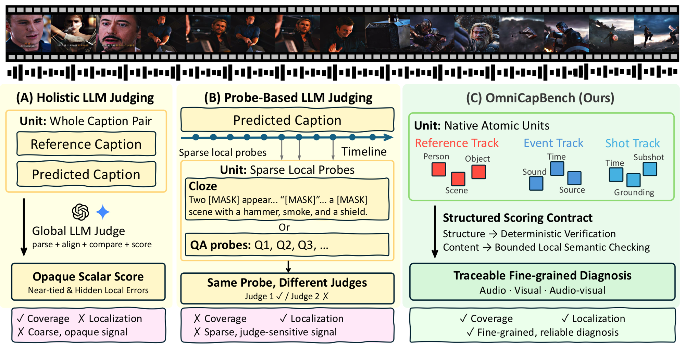
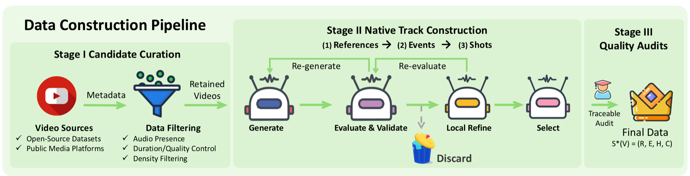
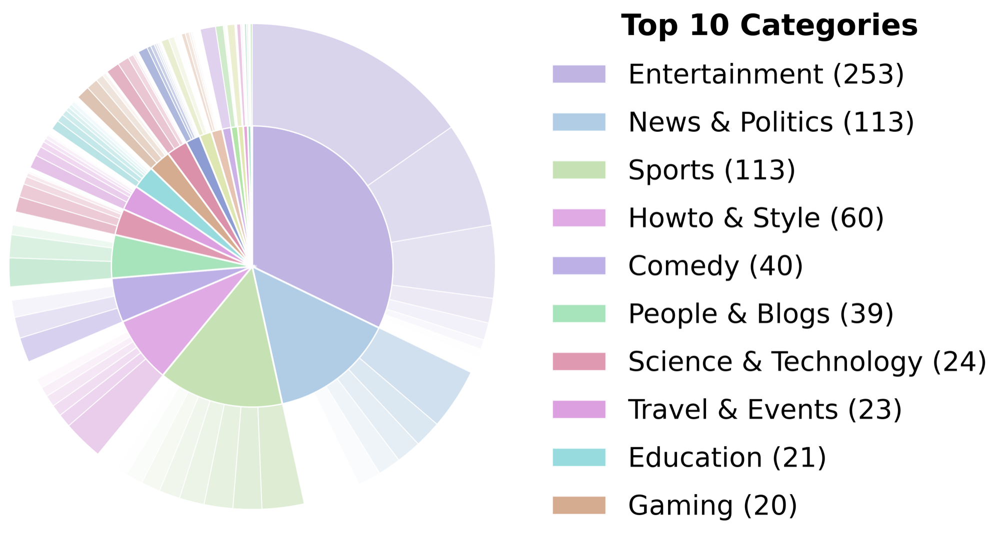
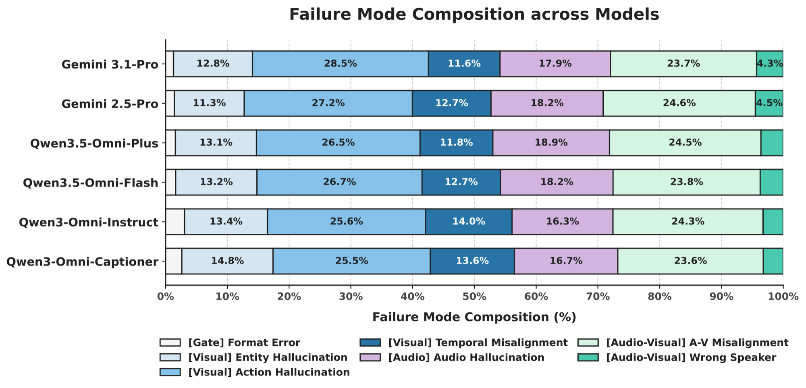
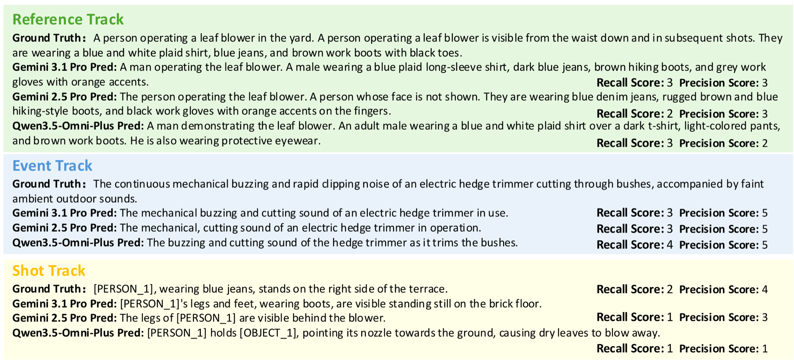

Multimodal large language models (MLLMs) are rapidly evolving toward continuous audio–visual reasoning, creating an urgent need for evaluations that expose their capability limits. Audio–visual captioning is an ideal diagnostic task, yet current benchmarks face a coupled trade-off: whole-caption scores provide coverage without localization, local probes provide localization without coverage, and unconstrained LLM judges introduce instability. We introduce OmniCapBench (Omni-Video Caption Benchmark), a benchmark that reframes audio–visual caption evaluation as a deep-structured diagnostic framework. OmniCapBench shifts the prediction target from free-form text to sets of atomic, verifiable evaluation units across three tracks: entity references, visual shots, and audio events, enabling reliable scoring with deterministic constraint checks and localized LLM-based semantic comparisons. With 786 densely annotated videos, OmniCapBench effectively distinguishes MLLM perception errors, including temporal grounding failures, identity drift, cross-modal misalignment, and hallucinated descriptions. Evaluating frontier MLLMs reveals strong local perception but weak long-horizon audio–visual reasoning, particularly in identity drift and cross-modal misalignment, providing a fine-grained roadmap for omnimodal development.
We decompose audio–visual captioning into atomic, verifiable units, explicitly isolating semantic content, temporal grounding, identity tracking, and cross-modal association.
A rigorous testbed of 786 densely annotated videos. Native Reference, Shot and Event tracks yield 5,818 entities, 6,537 audio events and 11,419 visual shots for fine-grained omnimodal diagnosis.
We expose its vulnerability to judge instability and its tendency to mask localized errors — and reward structurally flawed outputs — demonstrating the necessity of deep-structured metrics.
For a video V, OmniCapBench formalizes content as a native reference system S*(V) = (R, E, H) — three interdependent tracks that separate what happened from when and where it occurred.
Unique identifiers for key entities — people, objects and scenes — enabling consistent tracking of each entity throughout the video.
Auditory events and spoken dialogue with precise, continuous temporal boundaries (e.g. a dog bark from 10.5 s to 12.0 s).
Segments the visual timeline into shots and subshots, and acts as the unifying structure that anchors references and audio events to specific frames.
The model receives the video and directly emits the three prediction tracks as a structured JSON object, rather than a free-form paragraph — removing the ambiguity of monolithic text.
Deterministic rules reject undefined IDs, malformed time spans and impossible event–shot links. Surviving units are matched by tIoU, with a bounded LLM matcher for references and subshots.
Only structurally aligned unit pairs reach the LLM judge, which is restricted to local semantic equivalence on isolated fields — bidirectionally, so omissions hurt recall and hallucinations hurt precision.

| Statistic | Avg. / Pct. | Total |
|---|---|---|
| Videos (< 1 min) | 61.32% | 482 |
| Videos (1–3 min) | 29.01% | 228 |
| Videos (3–5 min) | 9.67% | 76 |
| Duration (hours) | — | 12.8 |
| Categories (Level-1) | — | 20 |
| Categories (Level-2) | — | 125 |
| References | 7.40 | 5,818 |
| Shots | 14.53 | 11,419 |
| Subshots | 49.82 | 39,160 |
| Events | 8.32 | 6,537 |
| — Dialogue | 6.83 | 5,370 |
Key statistics of OmniCapBench, comprising 786 videos. “Avg. / Pct.” denotes either the average per video or the percentage of total videos.

Does the protocol natively support the structural dimensions of omnimodal diagnosis? ✓ natively supported as a verifiable unit △ implicitly judged ✗ not supported
| Benchmark | Evaluated Unit | Scoring Operator | Identity Tracking | Temporal Grounding |
Audio-Visual Association | Diagnostic Traceability |
|---|---|---|---|---|---|---|
| Whole-Caption Paradigm | ||||||
| AuroraCap | Caption | Global LLM | ✗ | ✗ | ✗ | ✗ |
| VCapsBench | Caption | Global LLM | ✗ | ✗ | ✗ | ✗ |
| UGC-VideoCap | Caption | Global LLM | ✗ | ✗ | ✗ | ✗ |
| video-SALMONN 2 | Caption | Global LLM | ✗ | ✗ | ✗ | ✗ |
| Probe-Based Paradigm | ||||||
| Omni-Cloze | Cloze QA | LLM Scorer | △ | △ | △ | △ |
| Parse-then-Score Paradigm | ||||||
| LongVALE | Event text | Parser + LLM | ✗ | ✓ | ✗ | ✗ |
| TimeChat | Timed script | Parser + LLM | ✗ | ✓ | ✗ | △ |
| OmniScript | Script text | Parser + LLM | △ | ✓ | △ | △ |
| Native Atomic Paradigm | ||||||
| OmniCapBench (Ours) | Atomic units | Rule + Local LLM | ✓ | ✓ | ✓ | ✓ |
Scores are macro-averaged across videos. Best and second-best results are highlighted. Evaluation is decoupled: rule-based structural compliance first, bounded semantic checks only on structurally aligned units.
| Model | SGC | Visual | Audio | Audio-Visual | |||||||||
|---|---|---|---|---|---|---|---|---|---|---|---|---|---|
| RefUse | CCC | Ref Subj F1 | Ref Scene F1 |
Shot F1 | Shot tIoU | Subshot F1 | Subshot tIoU |
Event F1 | Event tIoU |
Speaker F1 | EVSA F1 |
||
| Proprietary Models | |||||||||||||
| Gemini 3.1-Pro | 97.36 | 70.39 | 34.43 | 78.60 | 82.68 | 76.24 | 70.74 | 65.27 | 48.76 | 63.32 | 71.92 | 91.18 | 51.46 |
| Gemini 2.5-Pro | 96.73 | 70.75 | 37.81 | 80.70 | 83.65 | 70.93 | 72.58 | 66.69 | 49.18 | 58.52 | 69.35 | 89.72 | 43.74 |
| Qwen3.5-Omni-Plus | 96.09 | 66.92 | 29.55 | 73.57 | 79.97 | 71.25 | 72.35 | 65.69 | 48.29 | 53.92 | 67.77 | 91.20 | 40.20 |
| Qwen3.5-Omni-Flash | 95.58 | 63.10 | 24.31 | 72.27 | 66.07 | 65.65 | 68.99 | 58.94 | 46.52 | 50.68 | 69.34 | 89.91 | 35.58 |
| Open-source Omnimodal Models | |||||||||||||
| Qwen3-Omni-Instruct | 89.02 | 40.96 | 9.85 | 54.84 | 64.55 | 49.98 | 67.92 | 29.51 | 47.95 | 41.70 | 40.99 | 88.35 | 13.33 |
| Qwen3-Omni-Captioner | 90.77 | 44.96 | 11.51 | 54.36 | 57.08 | 52.29 | 70.80 | 39.51 | 49.69 | 41.31 | 52.60 | 88.68 | 17.42 |
Rule-based structural evaluation. Metrics quantify structural compliance across Visual, Audio and Audio-Visual dimensions. SGC (schema compliance) is an independent prerequisite gate.
| Model | Visual | Audio | |||||||
|---|---|---|---|---|---|---|---|---|---|
| Shot | Subject | Scene | Subshot | Dialogue | Non- dialogue |
||||
| Recall | Prec. | Recall | Prec. | Recall | Prec. | ||||
| Proprietary Models | |||||||||
| Gemini 3.1-Pro | 59.05 | 43.78 | 67.07 | 51.78 | 75.62 | 53.29 | 70.92 | 91.18 | 41.49 |
| Gemini 2.5-Pro | 55.58 | 51.53 | 57.08 | 56.80 | 65.12 | 53.05 | 71.21 | 89.72 | 37.38 |
| Qwen3.5-Omni-Plus | 54.17 | 45.41 | 62.84 | 50.75 | 69.80 | 50.22 | 70.66 | 91.20 | 36.82 |
| Qwen3.5-Omni-Flash | 47.66 | 43.87 | 65.59 | 44.41 | 71.26 | 44.08 | 67.27 | 89.91 | 28.12 |
| Open-source Omnimodal Models | |||||||||
| Qwen3-Omni-Instruct | 34.63 | 40.31 | 62.02 | 36.07 | 70.73 | 29.42 | 57.84 | 88.35 | 20.51 |
| Qwen3-Omni-Captioner | 36.08 | 42.00 | 50.96 | 38.07 | 54.53 | 34.01 | 46.05 | 88.68 | 19.65 |
Localized semantic evaluation. Semantic fidelity is assessed exclusively on structurally aligned units. Bidirectional scoring isolates distinct failure modes: recall penalizes factual omissions, precision penalizes hallucinations.
Frontier models show strong basic perception (Gemini 2.5-Pro: 84.80% Ref Subject F1 on sub-minute videos), but tracking those identities across shots collapses — Cross-Shot Coreference Consistency drops to 37.81% for Gemini 2.5-Pro and to ≈10% for open-source models. Long-term visual object permanence remains unsolved, and traditional metrics hide it by only checking whether an object was mentioned once.
Models excel at speech transcription (dialogue semantics ≥ 88%), yet environmental-sound reasoning stays weak, and binding sounds to their concurrent visual source is much harder still: Gemini 3.1-Pro falls from 63.32% Event F1 to 51.46% EVSA F1, while no open-source model exceeds 20%.
Scoring semantics only on structurally valid units exposes divergent strategies: Gemini 3.1-Pro is conservative (67.07% precision vs. 43.78% recall on subjects), omitting details to avoid errors, whereas other models inflate recall by hallucinating unverified attributes.
Format errors are negligible (1.3% of Gemini 3.1-Pro failures). Its remaining errors concentrate in action hallucination (28.5%), audio-visual misalignment (23.7%) and audio hallucination (17.9%), while open-source models degrade uniformly across basic perception and cross-modal binding.
| Model | Text Metric (Prose) | Native Constraints | Human Audit |
|---|---|---|---|
| Pair 1: Qwen3.5-Omni-Flash vs. Qwen3-Omni | |||
| Weaker (Qwen3-Omni) | 52.2 | 37.5 | 21.6 |
| Stronger (Qwen3.5-Omni-Flash) | 47.8 | 62.5 | 78.4 |
| Pair 2: Qwen3.5-Omni-Plus vs. Qwen3.5-Omni-Flash | |||
| Weaker (Qwen3.5-Omni-Flash) | 41.7 | 21.4 | 29.9 |
| Stronger (Qwen3.5-Omni-Plus) | 58.3 | 78.6 | 70.1 |
| Average (stronger models) | 53.0 | 70.6 | 74.2 |
| Average (weaker models) | 47.0 | 29.4 | 25.8 |
On two hard-to-distinguish pairs, global text metrics falsely penalize the stronger model and overestimate the weaker one, creating an illusion of parity. Native structural constraints resolve the gap and align with the human audit.
| Judge | Holistic | QA probes | OmniCapBench |
|---|---|---|---|
| Weak | 71.24 | 61.17 | 56.82 |
| Mid | 83.08 | 53.49 | 58.24 |
| Strong | 93.92 | 56.57 | 57.60 |
| Spread (max − min) | 22.68 | 7.68 | 1.42 |
Swapping the LLM judge moves holistic scores by more than 22 points and QA probes by nearly 8, while bounded local scoring under OmniCapBench varies by only 1.4 — reliability comes from restricting the judge, not from a stronger judge.

Every failure mode is tied to a rule-based metric, so a capability deficit is independently traceable rather than absorbed into one aggregate score. Counts and rates are from evaluation logs for Gemini 3.1-Pro.
| Error family | Primary metric | What triggers it | Count | Rate |
|---|---|---|---|---|
| Schema Failure Gate | SGC | Output cannot be parsed into references, events and shots, or misses required JSON fields | 31 | 3.8% |
| Reference Recovery Visual | Ref F1 | A required ground-truth reference is missed, or a hallucinated reference cannot be matched | 3,778 | 31.7% |
| Reference-Use Visual | RefUse | A matched shot or subshot cites the wrong persistent reference ID | 8,649 | 34.1% |
| Identity Drift Visual | CCC | A persistent reference is split, merged or inconsistently tracked across shots | 2,656 | 65.2% |
| Shot Recovery / Alignment Visual | Shot F1 / tIoU | A visual micro-action or boundary is missed, hallucinated or severely misaligned in time | 5,156 | 26.2% |
| Event Recovery / Alignment Audio | Event F1 / tIoU | A required audio event is missed, hallucinated or aligned to the wrong time segment | 4,218 | 36.2% |
| Event-Shot Link A-V | EVSA | A predicted audio event is attached to the wrong visual shot in the timeline | 1,654 | 44.5% |
| Dialogue Error A-V | Speaker F1 | Matched dialogue is mis-transcribed or assigned to the wrong visual speaker | 260 | 7.0% |

A three-step path toward omnimodal video understanding: design the paradigm, measure it reliably, then iterate the algorithm.
Multi-Stream Scene Script — the factorized representation that decouples entities, audio events and visual states.
Deep-structured evaluation of fine-grained audio-visual captioning over 786 densely annotated videos.
Reinforcement-driven iteration on omnimodal video reasoning, guided by the diagnostics this benchmark exposes.
@inproceedings{yang2026omnicapbench,
title = {OmniCapBench: A Deep-Structured Evaluation Framework for
Fine-Grained Audio-Visual Captioning},
author = {Yang, Zhongyu and Tao, Jiale and Chen, Ruitao and Yang, Zuhao and
Yuan, Yingfang and Zhao, Xueliang and Auden and Wang, Kai and
Shao, Shuai and Wang, Biao and Yves, Steve and Lu, Qinglin},
booktitle = {Advances in Neural Information Processing Systems (NeurIPS),
Evaluations and Datasets Track},
year = {2026}
}